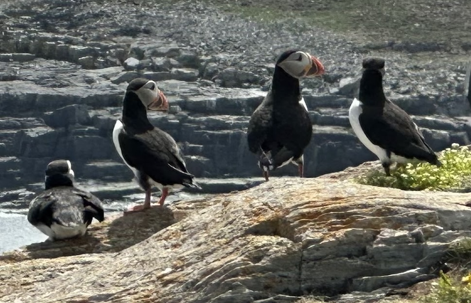
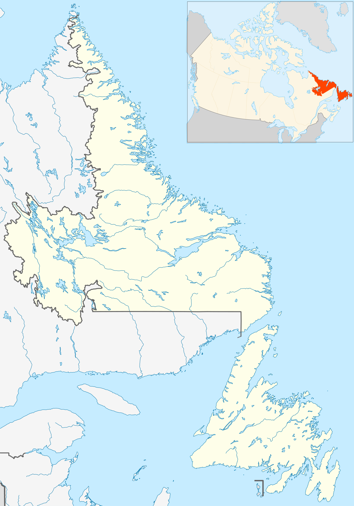
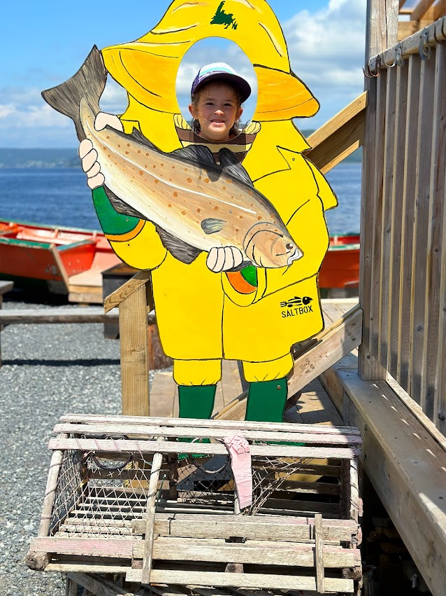

Welcome to
Newfoundland
& Labrador!
From towering icebergs to foggy folklore, discover the magic of Canada's easternmost province.
Atlantic Puffins

Where in the World Are We?
Newfoundland and Labrador sits on the far eastern edge of Canada — the first place in North America to see the sunrise every morning.

The Province at a Glance
Everything you need to know about Canada's most easternmost province — from its people to its geography.
549,738
People call it home
405,212
km² in size — bigger than Japan!
7,000+
Tiny islands in the province
1949
Year it joined Canada — one of the newest!
location_city Capital City
St. John's — the capital and largest city. About 40% of everyone in the province lives there, making it one of the most concentrated capitals in Canada.
translate Language
English is spoken by 97% of residents as their first language — making Newfoundland and Labrador the most linguistically unified province in all of Canada.
terrain Two Regions
The province has two parts: the island of Newfoundland in the Atlantic Ocean, and Labrador on the Canadian mainland — separated by the Strait of Belle Isle.
history Joined Canada
On March 31, 1949, Newfoundland became Canada's 10th province — joining by a very narrow vote. For a long time it was its own country!
phishing Economy
Fishing has been the heartbeat of the province for over 500 years. Today, oil and gas, mining, and tourism are also major parts of the economy.
sunny First Sunrise
Because it's Canada's easternmost province, Newfoundland and Labrador is the first place in all of North America to see the sun rise every single morning!

"The fog here is thick enough to butter toast, but the people are as warm as a fresh batch of toutons!"